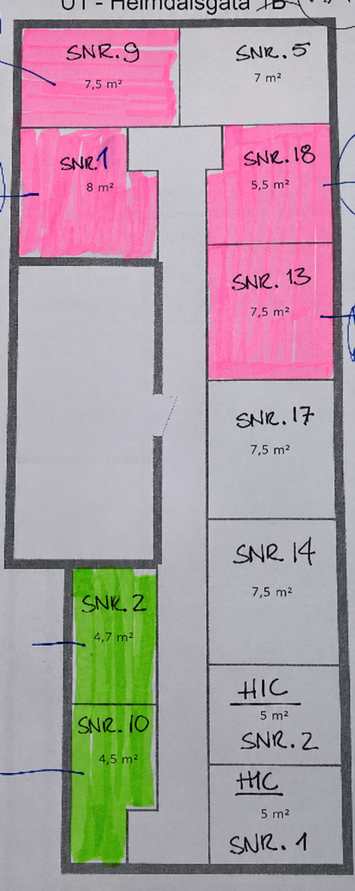
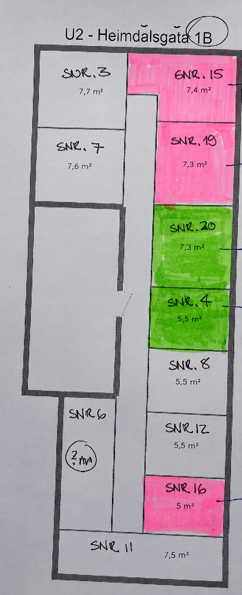

Bruk av bodområdene
Bodområdene er felles adkomstarealer og skal holdes ryddige og tilgjengelige. Eiendeler skal oppbevares inne i den enkelte bod.
- Det er ikke tillatt å sette igjen gjenstander, avfall, møbler, sykler eller andre eiendeler i ganger eller øvrige fellesområder.
- Adkomstveier, dører, rømningsveier, tekniske installasjoner og brannsikkerhetsutstyr skal alltid holdes frie.
- Farlige, giftige, eksplosive eller brennbare stoffer skal ikke oppbevares i bodene.
- Mat og annet som kan tiltrekke skadedyr skal ikke oppbevares i bodene.
- Dørene til bodområdene skal holdes lukket og låst.
- Skader, uvedkommende adgang eller andre uregelmessigheter bør meldes til styret så snart som mulig.
Registrer hvilken bod leiligheten din bruker i sameiets oversikt.
Åpne regnearketOversikt over bodene
Bildene under viser bodplasseringene i U1 og U2. Seksjonsnummer er skrevet inn på den enkelte bod.

